I realised that I haven’t really published a proper fieldwork update from the last season, so here it is! This was most likely the last field season of my PhD. Photos of Oz wildlife included, so read on and enjoy :]
Let’s set the scene
I carry out my fieldwork in Australia, specifically in and around the Australian National Botanic Gardens, in Canberra. The Gardens are managed, but provide fairly natural habitats with lots of shrubbery perfect for the superb fairy-wrens. It is a truly lovely field site with luxuries few other field sites have - drinking water fountains, toilets and even a cafe, which is great for a sneaky hot chocolate when your hands are stiff from holding the binoculars in the cold.
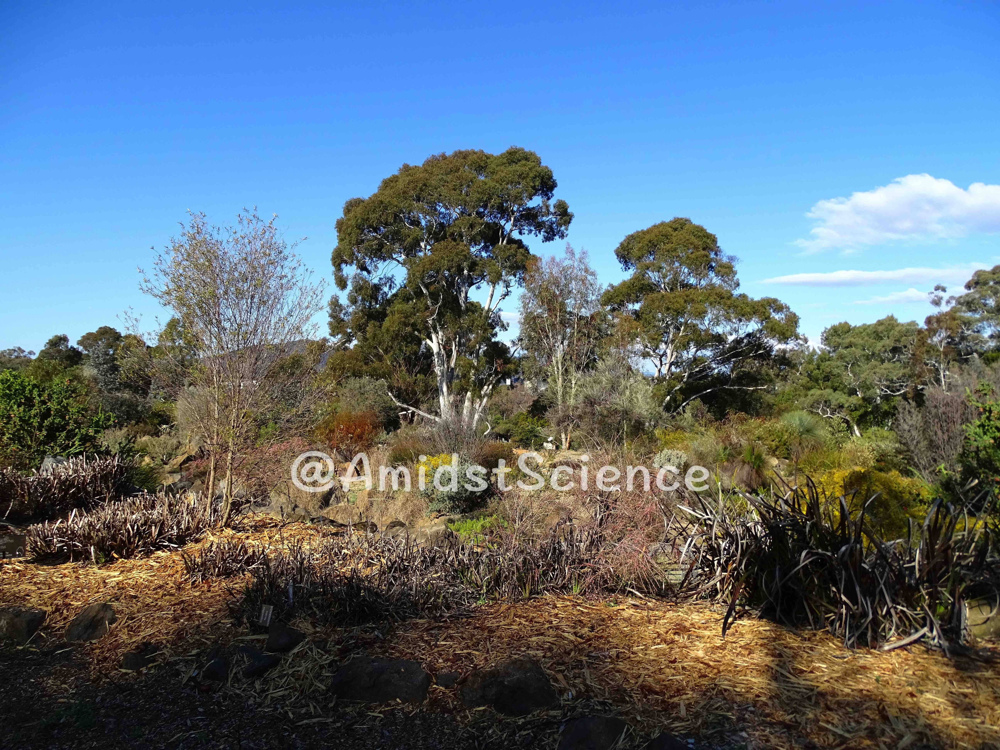
Yes, in the cold. When I say I work on an Australian species many imagine the tropics or the outback. The scorching sun, hot weather, maybe even the beach. As lovely as it is to be in Oz, as great as the field site is - it most definitely is not the stereotypical Australian image. This season, most days the temps didn’t go above 12-13 degrees C during the hottest part of the day. With majority of the work done in the mornings, ~6 degrees was more likely {even colder early on when I was cycling down to work}.
Layers it is! I was definitely glad for my lovely base layer and my “vaporise” jacket {a great birthday gift from my partner - I’m a sucker for functional stuff}.
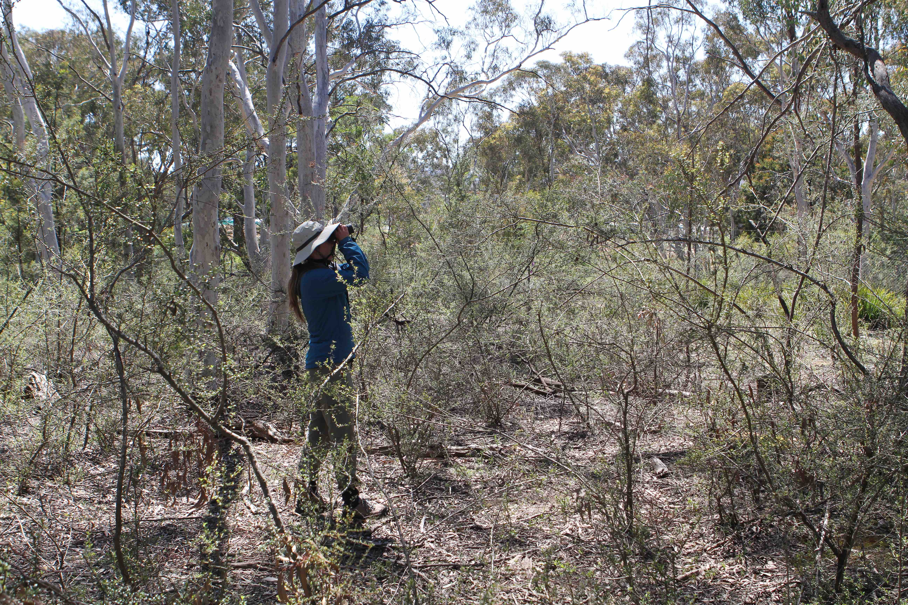
We also had a very very wet spring this year. I think we were 1 ml off the record-breaking rainfall, last time it was this wet was in 1976! {or so I’m told}. So imagine fairly chilly and windy conditions, rather than hot, and with quite a few wet days.
Creaking branches and every leaf moving around make it more tricky to hear and see the birds too; and when it’s wet the little fluff-balls hide in the bushes and don’t get up to much, so more often than not running trials in the rain is impossible.
But then again… It was an Australian spring with some beautiful Oz flowers and birds and I got to be outside. So I’m not complaining here, believe me. Just painting you a picture. {using some rather misleading photos as all of them are taken on the sunny days…}
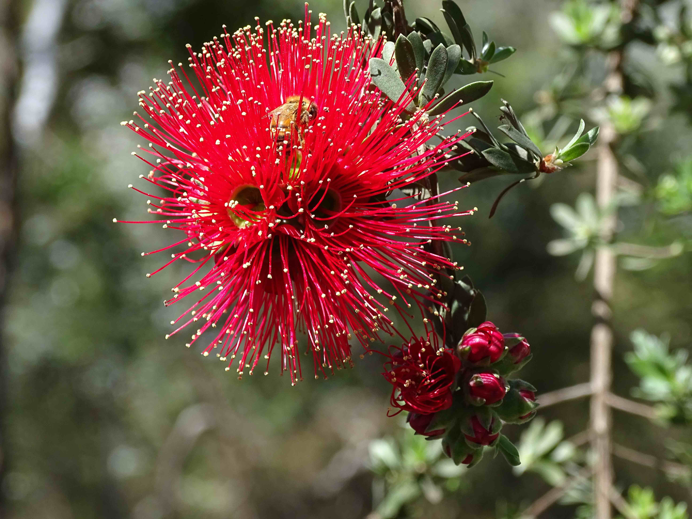
What do I do during fieldwork, you wonder?
Let’s start with a superb fairy-wren photo! I was pleased to see birds I got to know during my previous field season - including the handsome Ibu (YYbw) below, who was a helper last year but gained a dominant position this year. Go Ibu!
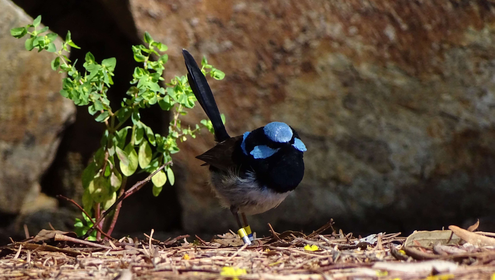
Back to work: I focus on courtship displays between related birds. The males are the ones displaying and ideally I’d like to follow them. But reliably following a tiny bird isn’t easy, especially when there are fences in the way and gates are not placed particularly frequently or strategically!
Instead of running like a headless chicken attempting to follow the boys, I watch female territories and note who comes to display to the females and what exactly do those males do during the visit. This is possible, as all our birds are ringed with colour rings, so that we can identify all the individuals in the field. This year was made trickier by some brand new snazzy looking rings {see the long orangey-red one in the photo below}, which confused my poor brain a bit to start with.
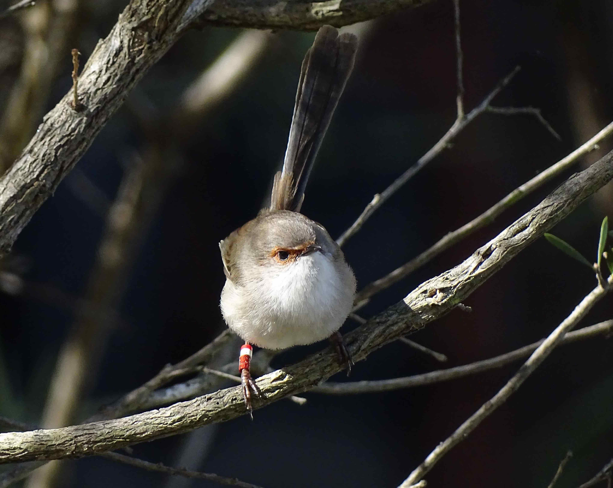
Visits & displays. Some males just come around to have a look, others strut around in what we call blue & black display - raised cheek and head feathers and a little dance, so that the female can truly appreciate the male’s beauty (and not see any of the unattractive brown feathers - those get hidden). Ginwig below demonstrates the raised cheek feathers.
Often the males also chase females and sometimes they bring tiny yellow flowers or petals - we had a lot of displays with petals this year. My guess is that it had something to do with the unusual weather: the wet conditions allowed tons of acacias to flower, providing an ample supply of petals. Every now and then males might also do a “seahorse” flight while leaving for home. It’s an odd, undulating type of flight, very energy consuming. We didn’t get one this year.
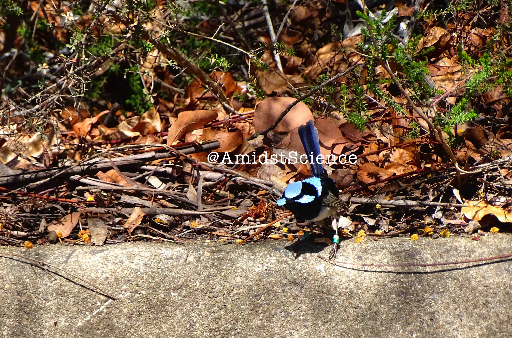
I had my very own field assistant!
If you follow the blog you might have seen that I looked for a field assistant to join me for this field season. I found and hired one - here is Gergana working hard and sporting our team blue colour:
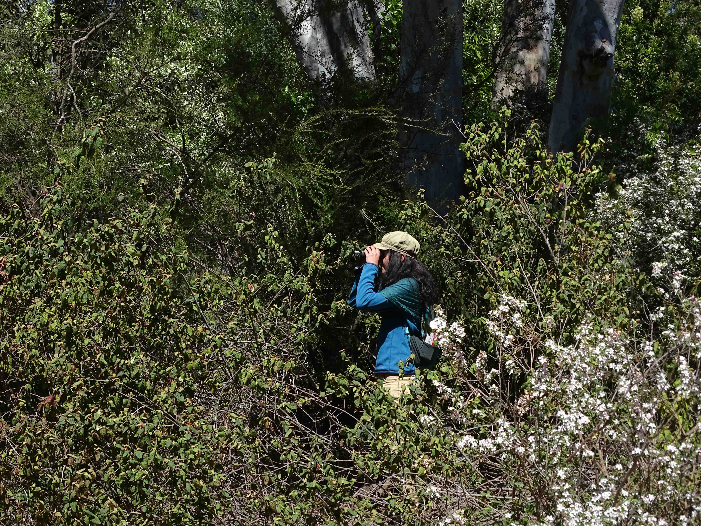
Gergana did a great job. During the previous field season I’d borrow the generic project assistants to help with running trials (you really need at least two people to do them well). This was tricky, as they had plenty of their own work to do and the best time to do my trials was also the best time for them to carry out their other tasks. The prime work time was a bit more limited this year, due to the weather: my life was made so much easier by having someone entirely for my own “use”. {cue evil laughter}
We got along really well {if I say so myself} and I appreciated Gergana’s hard work and enthusiasm, as well as our chats, both work & non-work ones. I do hope that she has enjoyed herself and managed to learn something - I really wanted this to be a learning experience for whoever fills in the role. It’s best when both sides benefit.
Here we are, the Superb (fairy-wrens) Team!
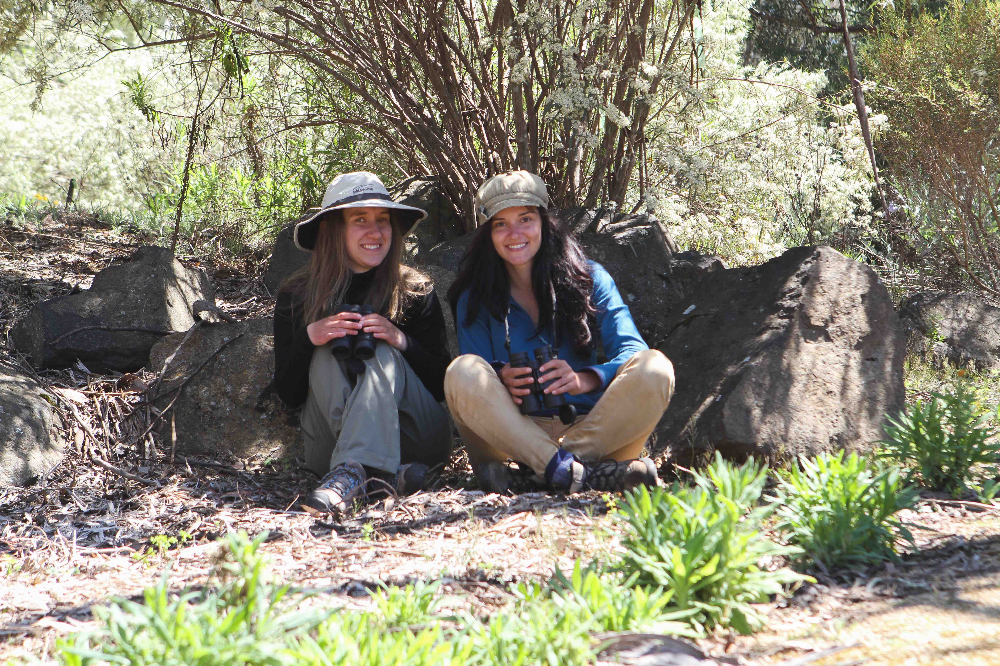
All work and no play? No!
I moulded our work schedule around the weather: dry = work, rain = time off. That meant less bird watching than last year, but it didn’t mean that we didn’t take any time off at all. That wouldn’t be healthy or fair to Gergana.
What comes next is really just a photo-fest. Enjoy!
Spring in Australia means parrots playing…
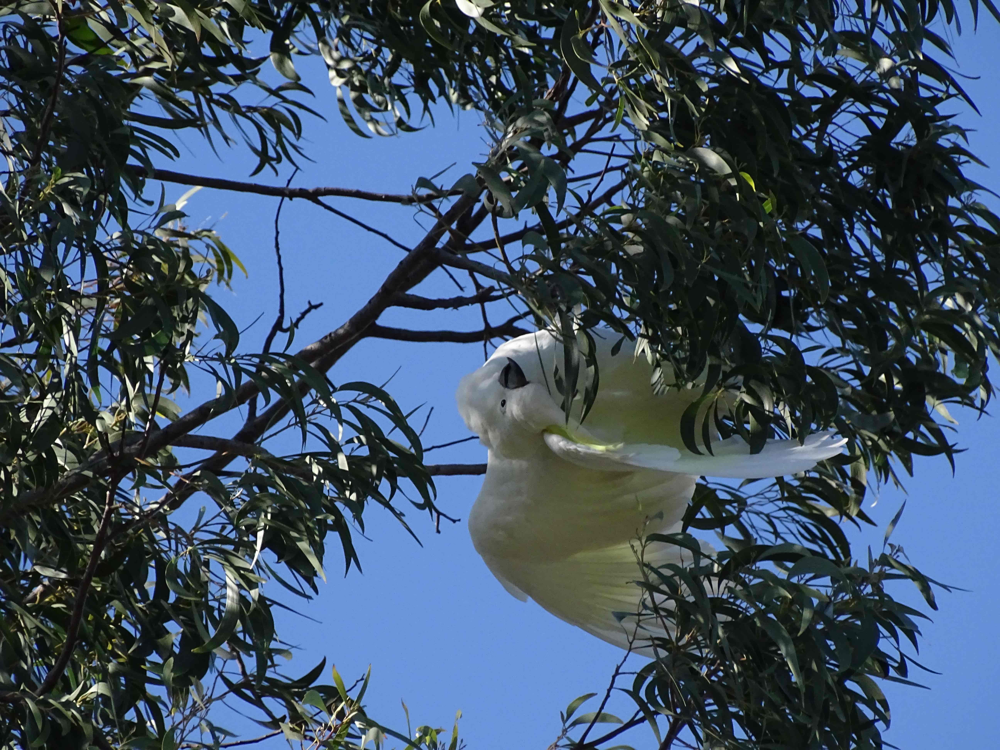
… and beautiful blossoms.
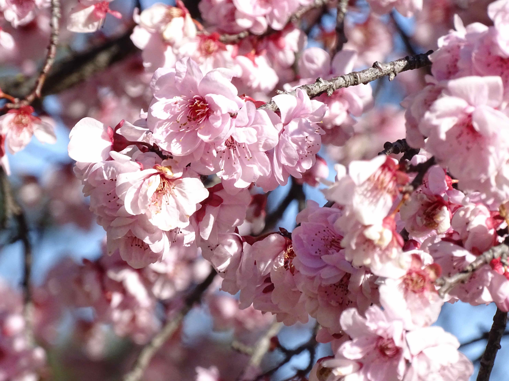
But it also means magpies eyeing you up trying to decide whether to attack or not… People tell you about the spiders, the crocs, the snakes, but no-one ever mentions that the first thing to viciously attack you is going to be a magpie!
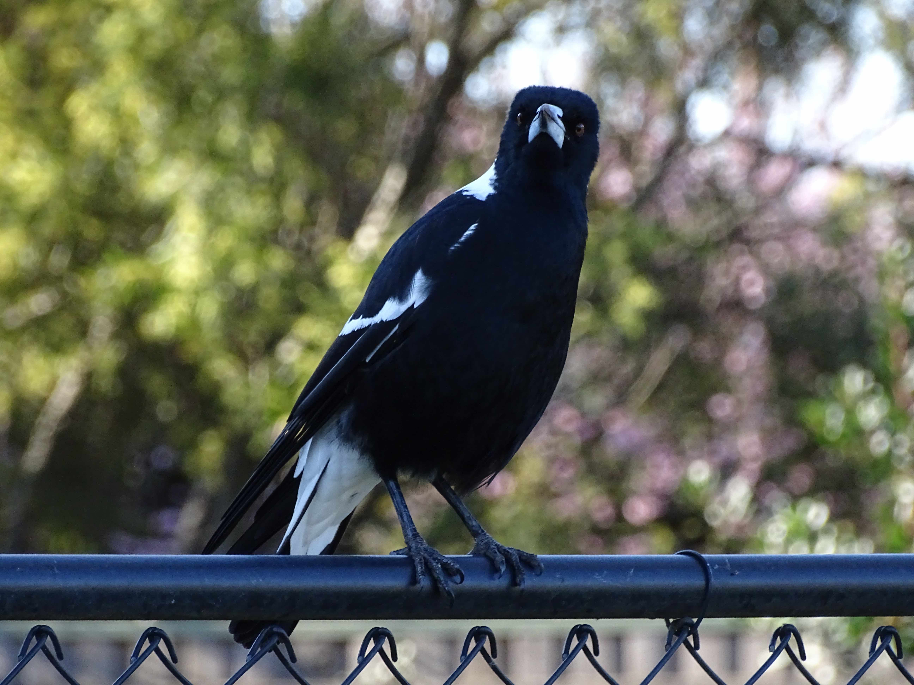
I also made sure to check up on some non-fairy-wren bird friends on the fieldsite: this lovely satin bowerbird was courting me again, he is a real Casanova.
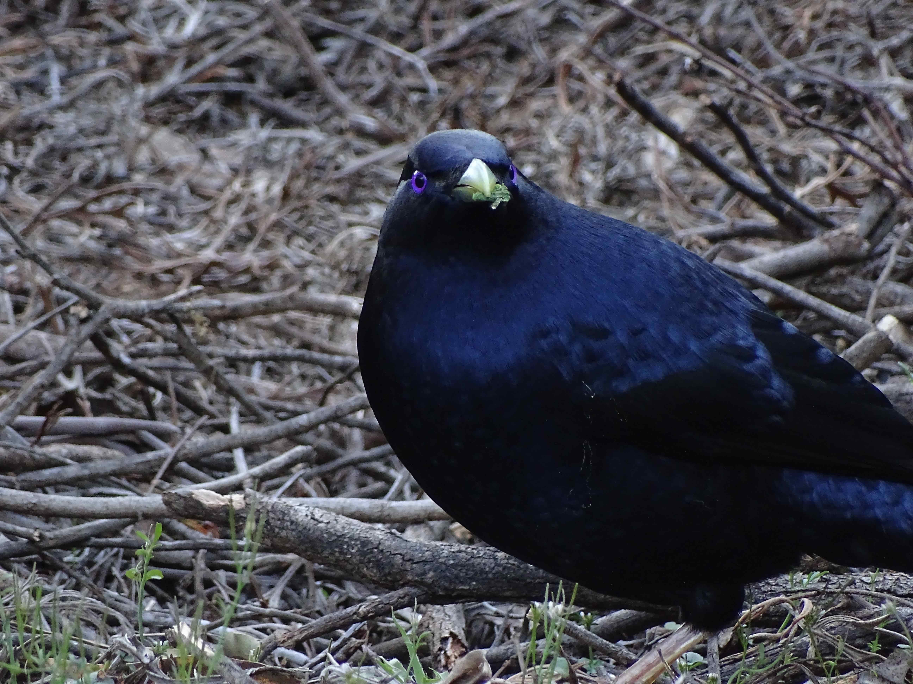
And the kookaburra, as always keeping an eye on me.
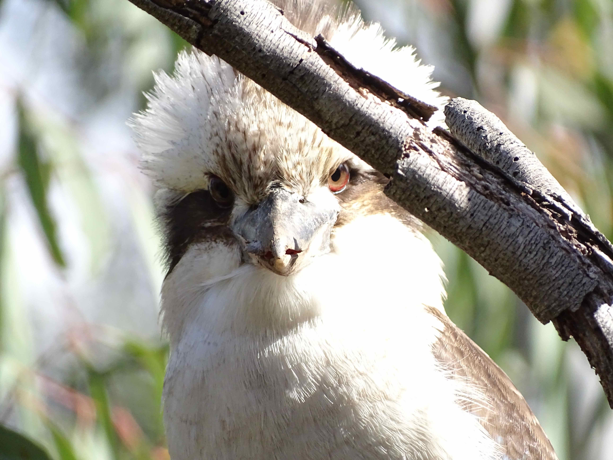
I made sure that we went to hunt down some wombats as Gergana hasn’t seen any non-dead ones before. Couldn’t let her leave Oz without a decent wombat-sighting {although she did see echidnas and I didn’t… I’m suspicious, maybe she hid them all}
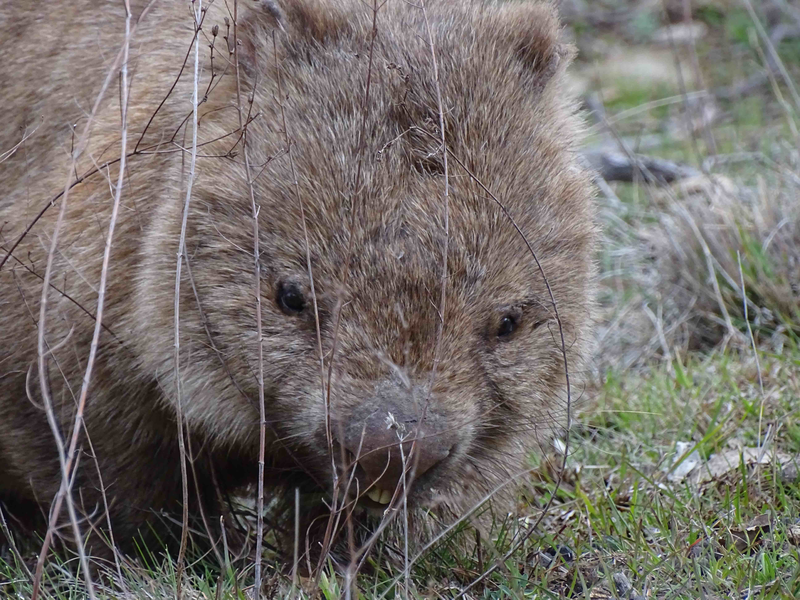
Finally, we did manage to do a little bit of birding - targeting the rainbow bee-eaters…
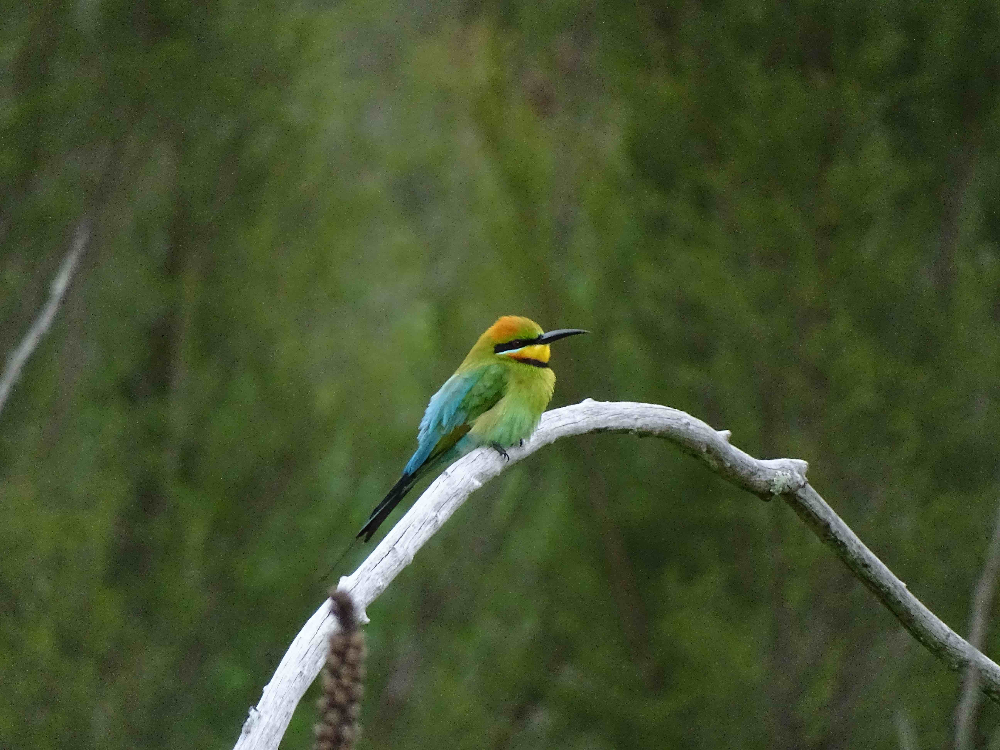
… and coming across the fattest magpie ever!
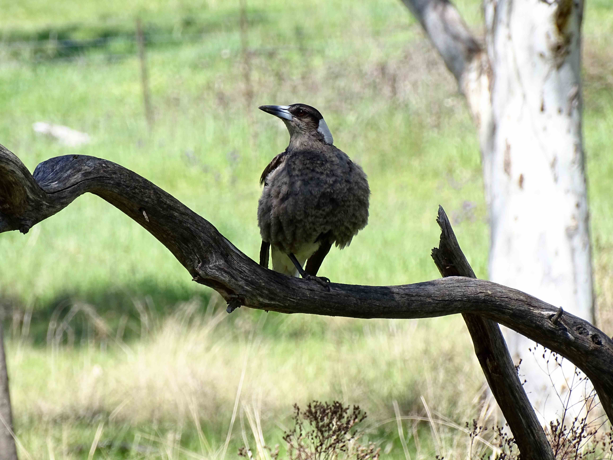